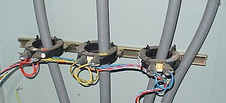
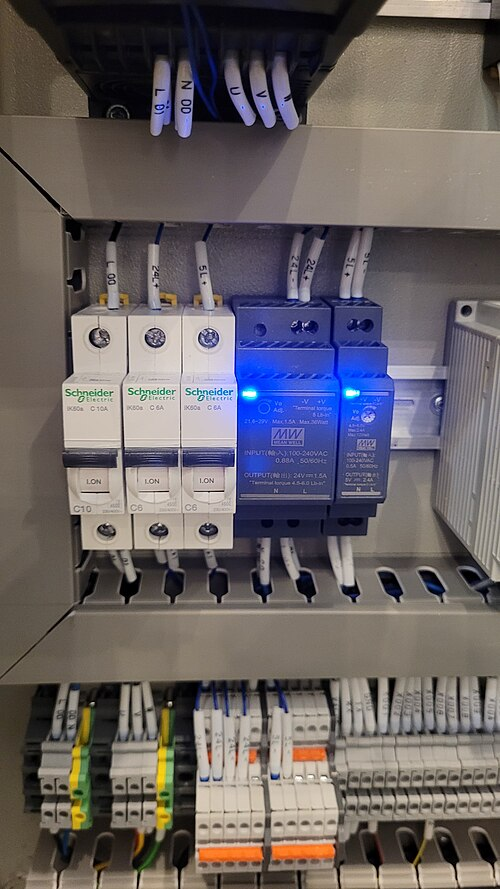

Commercial power measurement, 24 V distribution and smart sensor data
Separate a supply problem from a meter scaling error or an invalid field value by testing each boundary in the signal path.
Power, energy and current ratio
A meter combines voltage and current measurements to compute real power. For a sinusoidal single-phase load, P = VRMSIRMScosφ. For a balanced sinusoidal three-phase load, P = √3 VlineIlinecosφ. Industrial meters may compute power from simultaneous samples and add the phases, which matters for unbalanced or non-sinusoidal loads. Pair each phase current with the corresponding voltage reference. Meter sign depends on reference direction and load flow.
A 200:5 current-output CT has a nominal ratio of 40. A compatible meter with that configured ratio may already display primary amps. CT ratings, direction, burden and meter input are equipment-specific. Keep an energised current-output CT secondary safely connected under the electrical worker's procedure. A kWh counter measures energy. Take its change over a known interval and divide by elapsed hours for mean kW, allowing for possible rollover or meter reset. P81 meter case · Schneider meter configuration example.

Photo by Ali@gwc.org.uk, Wikimedia thumbnail, with on-page callouts. Original photo · CC BY-SA 2.5.


Photo by Angga Panca Alam Anugrah, Wikimedia thumbnail, with on-page callouts. Original photo · CC BY-SA 4.0.

Shared resistance makes one load affect another
Each positive and return path has resistance. If two loads share a piece of conductor, their combined current sets its voltage drop. With 0.30 Ω of total shared resistance and 2 A added load, the extra drop is 0.60 V. Many drops also occur around a terminal or a common return. Measure across the actual supply terminals and then across the actual load terminals in the same state to locate the boundary. The source itself can also sag, current-limit or fold back. Different scopes lead to different checks.
A fuse and an electronic branch protector have different opening characteristics. A coordinated system should tolerate expected inrush and limit how much one branch failure disturbs others. Selecting a device requires the prospective fault current, cable ratings, source behaviour, load characteristics and manufacturer instructions. A trip indication identifies a branch and supports an investigation of the downstream cause. P83 branch lab · Phoenix Contact electronic protection example.
Separate the IO-Link port and the upstream bus
Watch. Identify the master, the sensor port and the settings restored when a compatible sensor is connected. ifm’s IO-Link sensor replacement demonstration.
The IO-Link sensor link is point-to-point. The master talks to higher levels over another protocol such as PROFINET or EtherNet/IP, depending on the model. A typical three-wire connection has L+, L− and C/Q for signalling. Physical connector size alone does not establish compatibility. Ports with auxiliary power add wiring and isolation considerations. Check the manufacturer's pinout and both current limits.
| Evidence | What to verify |
|---|---|
| Identity | Vendor, device and revision compatibility. Select the IODD for that device. |
| Cyclic process value | Byte or bit layout, signedness, units and scale. Prove it responds to an actual target. |
| Parameter | Teach point, requested limits and configured master storage direction. Check the transferred values after replacement. |
| Validity and freshness | Port state and any PLC or gateway validity flag. Confirm what the programme does with last-known data after disconnect. |
Field numbers can look plausible while a device has stopped communicating. A readback of position or distance proves more when paired with an independent reference and a recorded time. Check data quality before queueing further actions. P82 IO-Link replacement case · ifm IO-Link reference.
Three sensors go offline at the same instant. The PLC remains reachable. Which supply readings would tell you whether a shared 24 V branch failed? If branch voltage stays normal, which master and device observations would help you locate the missing data?